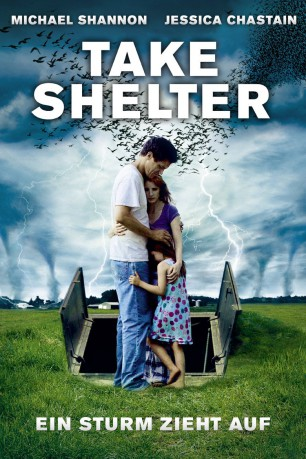

#7823 Take Shelter - Ein Sturm zieht auf
Alternativ: Take Shelter
 
 IMDB-Wertung: 7.4 / 10
IMDB-Wertung: 7.4 / 10  Metascore: 0
Metascore: 0 
Familienvater Curtis sieht plötzlich Zeichen eines herannahenden Sturmes am Himmel. Doch ist er da scheinbar der Einzige. Daher kommen ihm Zweifel, ob er tatsächlich visionär alleine diesen Tornado kommen sieht oder ob er wahnsinnig wird. Trotz ärztlicher Hilfe bleiben die Ängste und Visionen vor dem vermeintlich aufziehenden Sturm, und so baut er auf seinem Grundstück einen unterirdischen Schutzbunker, um seine Familie vor dem Tornado zu schützen. Dies führt zu innerfamiliären Spannungen.
Jahr: 2011
Dauer: 121 Minuten
FSK: 12
Land: USA Studio: Sony Pictures ClassicsTonspuren: DTS - ,
Untertitel:
Auflösung: 1080p (1920x816) Größe: 10854 MB
Genre: Thriller, Drama
Regisseur: Jeff Nichols
Drehbuch: Jeff Nichols
Soundtrack: David Wingo
Darsteller:
 Michael Shannon als Curtis
Michael Shannon als Curtis Jessica Chastain als Samantha
Jessica Chastain als Samantha- Tova Stewart als Hannah
 Shea Whigham als Dewart
Shea Whigham als Dewart Katy Mixon als Nat
Katy Mixon als Nat Robert Longstreet als Jim
Robert Longstreet als Jim- Heather Caldwell als Special Ed Teacher
- Charles Moore als Man at Window
 Ken Strunk als Doctor Shannan
Ken Strunk als Doctor Shannan- Maryanne Nagel als Insurance Agent
 Kathy Baker als Sarah
Kathy Baker als Sarah LisaGay Hamilton als Kendra
LisaGay Hamilton als Kendra Stuart Greer als Army-Navy Dave
Stuart Greer als Army-Navy Dave Ray McKinnon als Kyle
Ray McKinnon als Kyle- Bart Flynn als Dave
 Jeffrey Grover als Psychiatrist
Jeffrey Grover als Psychiatrist- Qenny O.T. Vitosha als Red the Dog
- Natasha Randall als Cammie
- Ron Kennard als Russell
- Scott Knisley als Lewis
- Sheila Hullihen als Woman in Road
- John Kloock als Man in Road
- Marianna Alacchi als Bargain Hunter
- Jacque Jovic als News Anchor
- Bob Maines als Walter Jacobs
- Pete Ferry als Melvin
- Molly McGinnis als Janine
- Angie Marino-Smith als Kathryn
- Isabelle Smith als Sue
- Tina Stump als Nurse
- Hailee Dickens als Pharmacist
- Guy Van Swearingen als Myers
- William Alexander als EMT
- Joanna Tyler als Attendant
- Jake Lockwood als Andy
- Kim Hendrickson als Customer
- Nick Koesters als Rich
- Joe Zamora als EMT by Ambulance (uncredited)
Datei: X:\2011(N-Z)\Take Shelter - Ein Sturm zieht auf (2011, FSK12, 1920x816).mkv seit 20.12.2017
Festplatte: HD 2011(G-Z)
 Es gibt insgesamt 132 Filme in der Gruppe '2011(N-Z)'
Es gibt insgesamt 132 Filme in der Gruppe '2011(N-Z)'